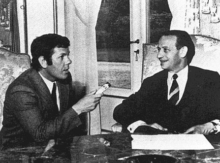

Soucoupes volantes : "Des cas n'ont pas reçu de réponse satisfaisante" déclare M. Robert Galley, Ministre des Armées.
En , ancien élève de l'Ecole Centrale des Arts et Manufactures, il est diplômé de l'ENS du Pétrole et des Moteurs. En il entre comme ingénieur stagiaire à la Compagnie Chérifienne des Pétroles puis au Commissariat à l'Énergie Atomique en tant que chef du département de construction des usines. Il y mènera notamment des études de construction des usines de plutonium de Marcoule, et de celle de Pierrelatte de .
En il est Ministre de l'Équipement et du Logement dans le gouvernement Pompidou 4, puis Ministre délégué auprès du premier ministre, chargé de la Recherche Scientifique et des Questions Atomiques et Spatiales dans le gouvernement Couve de Murville et Ministre des Postes et Télécommunications dans celui de Chaban-Delmas jusqu'en , où il est Ministre des Transports sous Messmer 1. En il est Ministre des Armées sous Messmer 2.

Le , suite à une vague d'observations en France, Galley accepte de participer à une série d'entretiens radiophoniques menés par Jean-Claude Bourret, incluant des rapports de témoins et les déclarations de 3 scientifiques français qui étudient le phénomène ovni depuis de nombreuses années : Pierre Guérin, Claude Poher et Jacques Vallée :
Soucoupes volantes : "Des cas n'ont pas reçu de réponse satisfaisante" déclare M. Robert Galley, Ministre des Armées.
Le , Galley est reconduit Ministre des Armées sous Messmer 3. On dit que, sur son lit de mort,
Pompidou aurait dit à son ami Galley : Nous avons assez d'emmerdements entre les mains sans y ajouter les
soucoupes
.
En il devient Ministre de l'Équipement sous Jacques Chirac, remplacé à la Défense par Jacques Soufflet. À partir de il est Ministre de la Coopération sous les gouvernements Barre successifs, son dernier mandat sous ce dernier étant requalifié en Ministère de la Coopération et de la Défense , jusque (élection de François Mitterrand). Cette année-là, il est élu député RPR de l'Aube ; il sera réélu , , et .
Depuis , Galley est membre de l'Office parlementaire d'évaluation des choix scientifiques et technologiques.
Bourret, J.-C. : La Nouvelle Vague des Soucoupes Volantes, Presses Pocket, 1976